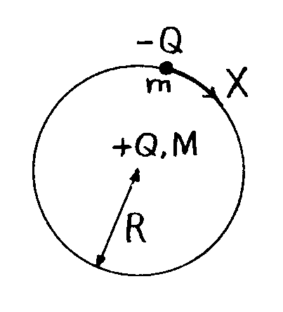

[It has been shown above that the parameter Ad, which is a property of the vacuum medium, must have the value of approximately 20 gm/cc. This does not mean that this mass density is that attributed to the vacuum medium, because A is a numerical constant and the three separate empirical sets of data that tell us the value of Ad have not revealed the value of A on its own. However, we can now proceed further, using the result we have obtained to tell us something about the satellite system that can develop, whether we consider Sun or Earth. The following analysis was summarized in a box illustration in the 1977 lecture paper. However, it also features in the text at pp. 158-159 of my 1980 book 'Physics Unified' and, taken in combination with pp. 166-167, is expressed there with greater clarity. Accordingly, apart from the diagram below (which did not include the suffix feature for M or m) I shall here, in the remainder of this text under the heading SATELLITE FORMATION, reproduce text from this book to complete this section.]

Note that:
Once the equation involving kQ and X above is established, the body is primed to create its satellite system. All that has to happen is for the Q charges to neutralize by slow discharge and as this happens the satellite matter of mass ms will leave the main body. It will take up an eventual orbital position governed by gravitational balance between Mp-ms and ms and the centrifugal forces on ms.
This is all rather simple and it lends itself to immediate verification because we can develop a formula for ms/Mp which can be checked with observation. Use the above equation to link G, Mp and Q and write Mp as 4(pi)/3 times dpR3. Replace X by 2MpR2w/5, the angular momentum formula for a uniformly dense sphere of mass Mp and radius R rotating at angular velocity w. Then the equations combine to give:
Now apply this to the Sun, noting the initial angular velocity w is found by summing the present angular momentum of the solar system and computing w from the above expression for X. This is shown in Appendix II of the book 'Physics Unified' to make w a little greater than 8x10-5 rad/s. [But note that this assumes that the Sun's mean mass density of 1.4 gm/cc applies as a uniform distribution throughout the solar form.] On this assumption, we then find that if k=2 the planet/Sun mass ratio given by our formula is 1/764. The observed value of this mass ratio is 1/745.
Next, let us check this same formula with the Earth's own satellite, the Moon. The Earth has a dp value of 5.5 gm/cc and w of the initial Earth before the Moon was ejected was, according to Lyttleton, 5.5 hours per revolution or (3.2)x10-4 rad/s. This is easily verified by adding the Moon's angular momentum in orbit around the Earth to that possessed by Earth today. In this case we find that if k=1 we obtain from our equation a value of the Moon/Earth mass ratio of 1/83. The observed ratio is 1/81.
It follows that we have a viable theory of creation of our planetary system if only we can explain why k=2 for the Sun and k=1 for the Earth. This is a vital clue to the understanding of the cosmic medium and the source of the Sun's initial angular momentum.
[The 1977 lecture paper did not resolve the question as to why k should be different by a factor of 2 for Sun and Earth and so we will not here follow through with the explanation that later appeared in the 1980 book 'Physics Unified'. However, it will be the subject of a later Lecture included in these Web pages and, in the meantime, copies of that book are in print and are still available at this time (June, 1977). The subject Lecture now proceeds by reverting to the next section of text in the 1977 lecture paper.]
The geometry of a lattice-structured vacuum can yield parameters determining the fundamental physical constants and assuring their universal equality [1969a, 1975a]. However, this takes us beyond the scope of this paper and I wish to conclude by suggesting some experiments.
The interesting question is whether the vacuum can be set in rotation by test apparatus and this Earth rotation component obscured in optical tests. For example, at the equator the laboratory moves eastwards at a speed of about 460 m/s. Speed of light tests should indicate a difference of 920 m/s between the west-east and east-west speeds. This is provided the apparatus has not become, in effect, a system with its own rotating vacuum and so carried forwards around the equator with what is effectively a vacuum system in linear motion. In short, if rotating apparatus is avoided, it should be possible, as in the Michelson-Gale-Pearson experiment to detect the 920 m/s speed difference in the light tests. If the presence of rotating apparatus obscures this measurement and differences of a few metres per second are measured then this is evidence supporting the vacuum spin hypothesis presented above. I submit that the many experiments which now verify the isotropy of the speed of light relative to the laboratory and claim results to within a few metres per second all have test apparatus in rotation during the experiment. Therefore, what is needed is an experiment which involves no rotating apparatus and measures Earth rotation speed, but which can then be subjected to rotation and shown to become insensitive to Earth rotation. Then any delay in the onset of this change following rotation of the apparatus will give evidence of the inertial properties of the vacuum spin. The follow-on from this is to seek to sense mechanically the coupling between the vacuum spin and the rotating apparatus.

Finally, an interesting experiment has been performed by Ryan and Vonnegut (R.T. Ryan & B. Vonnegut,'Formation of Vortex by an Elevated Electrical Heat Source', Nature Physical Review, v. 233, 142; 1971). They arranged for a cage to rotate around an electric arc discharge at quite low speed and found that this stabilized the arc. The task of stabilizing an electric arc is one of the major problems of thermonuclear fusion research. It seems therefore very difficult to believe that the wild antics of the arc discharge are tamed merely by the slow rotation of a column of air. Perhaps there is vacuum spin in this experiment and it is the influence of the induced vacuum fields which stabilize the arc. Here then is more scope for research. Can the arc be stabilized in a vacuum? It is research which the modern physicists will not readily undertake because there is widespread belief that the vacuum is a non-entity devoid of any special properties. It is a belief encouraged by the development of relativity and in my experience those who believe in relativity deny the existence of the aether. On the other hand I was once reassured by a comment Professor Cullwick made about something I published (E.G. Cullwick, 'Relativity and the Ether', Electronics & Power, v. 22, 40; 1976). He quoted Einstein as saying: " The special theory of relativity does not compel us to deny the existenceof the ether....there is weighty evidence in favour of the ether hypothesis."
[The above lecture paper was dated 15 September, 1977. It did include another boxed illustration containing the following analysis explaining the induction of charge by vacuum spin.]
[Beneath this heading in the 1977 lecture paper there was a sub-heading (Linear Oscillator Property) which stressed the point that the vacuum medium exhibits the characteristics of a simple harmonic linear oscillator. The vacuum medium has a natural oscillation frequency which has the value found by dividing the rest-mass energy of the electron by Planck's constant. At the speed of light that frequency corresponds to the Compton electron wavelength h/mc. As an angular frequency it is denoted W in the following text of the 1977 lecture paper. The Greek capital omega is used instead of W in the figure below, which is copied from the lecture paper.]

Note then that there will be an induced charge density of o, given by:
The electrical nature of the restoring force and the electric induction developed by vacuum spin are then readily explained by dimensional analysis. Note that the '=' sign used here implies equivalence or proportionality and not equality.
Then, since we have shown that oo(2w/W) is proportional to o, we find that the mass density of the vacuum structure is proportional to (o/w)2 which we also inferred earlier from dimensional analysis, but without giving reason for the induction process in terms of the linear oscillator property of the electrical system that exists as the aether medium.
Concerning Zinsser I cannot vouch in any way for the authenticity of what he claimed, but I think it appropriate to refer here to some comments I quote from a book by Thomas F. Valone entitled 'The Homopolar Handbook', published by Integrity Research Institute, 1377 K Street NW, Syuite 204, Washington, DC 20005.. This book is dated 1994, but it includes on pp. 74-75 an account of a meeting between Valone and Zinsser in Hanover, Germany in 1980. The report there published had appeared earlier in 'Energy Unlimited', No. 9, publisher's address: Rt. 4, Box 288, Los Lunas, NM 87031, USA.'
Valone's remarks read: "At dinner, Adam Trombly and I were interrupted by Dr. Nieper re-introducing Rudolph Zinsser as the foremost German expert on gravitation. Then the friendly, white-haired Zinsser began to describe his 10 years of research to us as I reached for my tape recorder. There was an excitement in the air as Adam and I struggled to comprehend Dr. Zinsser's patented pulse generator (US Patent No. 4,085,384) causing an unprecented 3 to 5 hour force from a brief 'activation' of only 90 seconds. We were shown a 6-inch plexiglas cylinder with two aluminium plates inside submerged in a water dielectric. He described the small activator in front of us energizing an object suspended in a vacuum.
Dr. Zinsser showed us graphs recording the angle of deflection of the object which was labelled in terms of force. A maximum of 8 dynes manifested within 1/4 hour of activation, slowly dropping to zero about 5 hours later. He said everything could be scaled upwards without difficulty. In comparing the impulse delivered to power input, he said that it was at least 10,000 times the ratio obtained from chemical rockets (based on Dr. Peschka's analysis). I am really glad I met Rudolph Zinsser who certainly destroyed my conventional notions of force and energy."